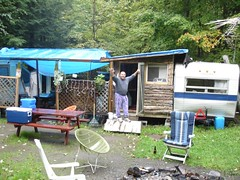
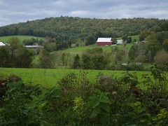

New England
Dan Lewis
Thanks to Nancy's dear old brother (yes he is older) Dan, for the best gourmet meal this side of Italy and also a chance to see the "gang" again. Dan's building a second home on Goose Pond Road. Your all are welcome to stop by, and have a beer at sunset and watch the day settle into night on the newly contructed deck the "gang" built. It is a great tradition we all should all adopt. Stop what you are doing at sunset, have a seat in a comfortable chair and an watch the sun go down. Also thanks to Tod for giving us a lift 30 miles down the road. It would have been a 90 mile day with a deadline we would not have meet.
We're done and back
We made it to Manchester safely, packed up our bikes at the bike store, shipped them off FedEx Ground (hope they get home OK) and then mailed ourselves home today. Made it just fine - My son Mark picked us up at the airport.
Now that we have easy internet access we'll post more articles and pictures in the next day or so.
Biking from Quebec, Canada to Vermont, USA

Pierre Robin surveying his kingdom
Randy and I debated if we wanted to ride in rain and or take a day off. We finally decided not to be wimps and ride in the rain. After leaving Pierre fishing camp at Lac Memphremagog, we rode south into Vermont. read more here... lee mas aquí... »
Good maps and good riding

Our friend Roland gave us the Delorme atlases/gazeteers for New Hampshire and Maine, and they made all the difference in our trip. (We later bought the Vermont gazeteer.) We were able to get *good* information about little back roads, and always had options if we didn't like the highways we were on.
As bad as it sounds, I just ripped the appropriate pages out of the books and put them in my map case on my handlebar bag and we followed them along. They're wonderful and highly recommended. I've used them a bit in the past, but will probably always carry them in the future.
Trip Wrapup and Finances

Countryside near Mosquitoville, Vermont
Well, we're home and settling in to an altered reality. The cat is really lonely and there are lots of things to catch up on.
Miles: We went 691 miles on our big loop, didn't do the loop we planned since we went up into Canada and came back on the Northeast side of Vermont. Our biggest day was a 65-miler, and the shortest a 23-mile day. The average day was about 43 miles.
Route: The actual route is now posted, and you can see that we didn't go west of Vermont's fabulous Northeast Kingdom, but we did go up into Quebec as far as Magog. read more here... lee mas aquí... »